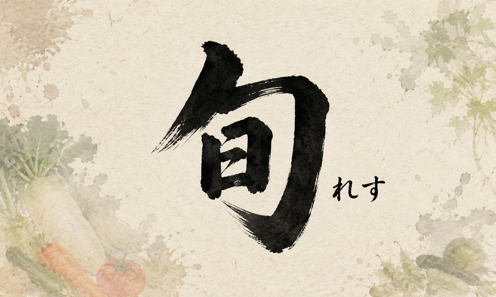
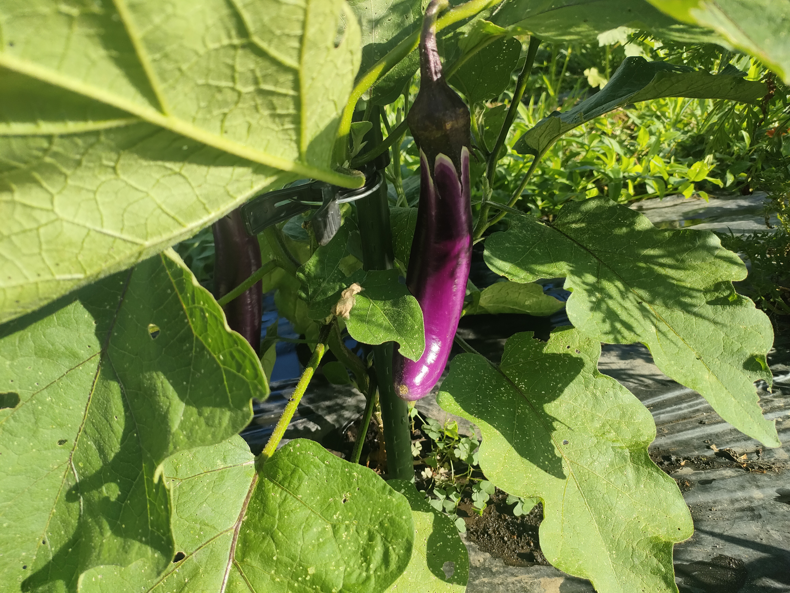
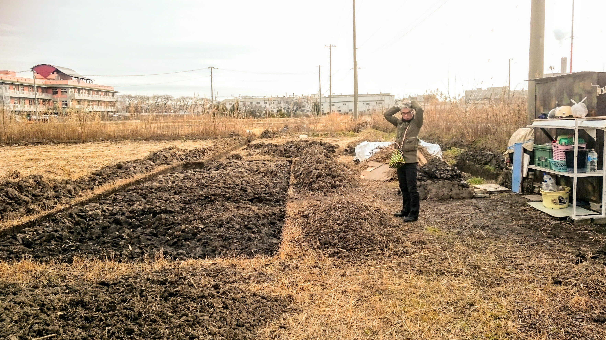

今月のピックアップ写真
何度も直売所に通ってくれているお客さんの言葉から。

おさんぽ便り
7月のマルシェで、何度も直売所に通ってくれているお客さんから、こんなことを言われました。
「ここに来ると、旬のものを知れるのがいいですよね」
その言葉を聞いて、少しうれしくなりました。
オラ自身、畑を始めるまで、野菜の旬なんてほとんど意識していませんでした。だってスーパーへ行けば、一年中いろいろな野菜が並んでいたし。
栽培するようになって、その野菜が本来いつ育ち、いつ食べるものなのかを知っていく事になります。
今では当たり前になっていますが、それまでのオラは、いわば「旬レス」だったんですナ。
そして、栽培を始めるにあたって、まず自分が何も知らないなと思ったのが、正に野菜の「旬」でした。
だから、お客さんからそんな言葉をいただけたのは、すごくうれしかった。
畑の景色が並ぶ
便利さのおかげで、冬にも夏野菜が買える。遠くの産地から運ばれてきて、季節をまたいで食べることもできる。それは本当にありがたいことです。
でも、露地栽培の畑では、野菜は人間の都合どおりには並べられません。
採れる時には、たくさん採れる。終わる時には、すっと終わる。そして季節が進むと、また別の野菜が顔を出す。
直売所に並んでいるのは、その時の畑の景色です。
今日は何があるかな。先週あった野菜が、もう終わっているな。あ、新しい季節が来たんだな。
そんなふうに感じてもらえる場所であれたら、なんか素敵だなと思っただ。
1 / 5
旬には、始まりと終わりがある
今回、あらためて「旬」という言葉を調べてみました。
旬というと、いちばん味が良く、たくさん採れる時期だけを指すように思っていました。でも、日本の食文化では、旬の移り変わりを「走り・盛り・名残」という三つの時期で味わう考え方があります。
出始めの初物を楽しむ「走り」。
味も収穫量も充実する「盛り」。
そして、もうすぐ終わる季節を惜しみながら味わう「名残」。
ある意味、人間の一生にも喩えれますけれど、旬とは、いちばんおいしい一点だけではなく、野菜が現れ、満ちて、やがて姿を消していく時間そのものなのかもしれません。
その時の持ち味
この考え方をたどっていくと、北大路魯山人の食の世界にもつながりました。
魯山人は、食材はただ新鮮ならよいというだけではなく、出始めなのか、出盛りなのか、その時々の持ち味を細かく見ていました。
もちろん、オラは魯山人のような美食家ではありません。
いつも鍋を空焚きして食材を無駄にしたり、火事になりそうになったりしているので、本当なら全部生で食べたほうが安全なくらいです。
それでも最近、調理とは、食材をただ食べられるようにすることではなく、その時の持ち味を、もっとおいしく食べるための方法なんだと気づきました。
ただ、畑で野菜を作り、採れ始めから終わりまでを見ていると、食べ物の味は季節の流れと切り離せないものなんだと、少しずつ分かってきます。
たくさん採れ始めた時の勢いも、最後の一本を収穫する寂しさも、露地の畑だから感じられる旬の一部です。
季節を思い出す小さな場所
おさんぽマルシェは、旬レスの時代に、畑から季節を思い出す小さな場所でありたいです。
旬を知るというのは、野菜の名前や収穫時期を覚えることだけではありません。
「今年も始まったな」
「今がいちばん採れる時だな」
「もうすぐ終わりなんだな」
そんな季節の始まりと盛りと名残を、野菜を通して感じることなのだと思います。
2 / 5
季節のお野菜写真
畑で育っているピントンロング。葉の奥から、細長い紫色の実が顔を出しています。

台湾系の長ナス
ピントンロングは、台湾系の長ナスとして知られる固定種の品種です。
名前の「Ping Tung」は、台湾南部の屏東（ピントン）に由来するとされ、温暖な気候の中で育てられてきたナスです。
細長く伸びる実と、明るい紫色の美しい果皮が特徴で、日本の一般的なナスよりもすらりとした姿をしています。
火を入れると、とろっと
果肉はやわらかく、皮も薄めで、火の通りがよいのが魅力です。
加熱するととろっとした食感になり、ナスらしい甘みとみずみずしさが引き立ちます。
炒め物、焼きナス、煮びたし、揚げ物など幅広く使いやすい品種です。
特に油との相性がよく、炒めると果肉がうまみを含み、やわらかな食感になります。皮がやわらかいので、皮ごと調理しても食べやすく、色合いも料理に映えます。
種からつないだ固定種
このピントンロングは、種から苗を育て、畑で栽培している固定種のナスです。
固定種は、同じ品種として受け継がれてきた性質を持ち、種を通して次の世代へつないでいけるのが特徴です。
日本では一般流通で見かける機会はまだ少なく、家庭菜園や直売所で出会える少し珍しいナスです。
台湾の暑さの中で育ってきた長ナスらしく、夏の畑で勢いよく実をつける姿も印象的。
3 / 5
野食育の記録写真
畝の場所を作り始めた開墾途中の畑。
小屋と道具、ようやくい行きかいしながらなり始めた頃。
時間を作っては訪れて、その度にオーマイ釈迦（ゴット）な自分。

畑になりかけの場所
開墾が少し進んで、ようやく畝（うね）にしたい場所を作りはじめた頃の写真です。
こうして見ると、まだ何メートル四方も決めてもおらず
わかってもいなくて、土と葦をただ掘り起こして何となく区画を作って行った。
小屋もあるけど、秘密基地みたいなもんですね。
だって本人がどうやっていったらいいか、わかってもいなかった頃ですから（笑
遠くには葦（ヨシ）も見えてるナ。
それなのに、写真の中のオラは、なんだかちょっと余裕がある顔をしているだナ。
今なら笑えるけど、この頃はこの頃で本気。まだ何も栽培もしていもないのに、もう何かが始まった気がしていた。
食べる前に始まっていた
食べることは、種をまいた日から始まったわけではなかったという、たまたまのオラの体験談。
野菜を育てる前に、土を見てきて、草を見て、水の流れを見てきて、「ここで本当にできるんか？」と考えながらの時間に追われてきた。
オラにとっての野食育は、たぶんそこから始まっています。
4 / 5
教える前に、体が覚える事
食育というと、栄養の話だとか、食べ物を大切にしましょうという話になりがちです。もちろん、それも大事です。
でも、畑に立っていると、言葉になる前に体が覚えることがある。
土は、乾いている日と湿っている日で重さが違う。草は、抜きやすい草と、なかなか抜けない草があったり。水は、まっすぐ流れてほしいところには流れず、勝手なところへ行く。
そういうことも、ただ知識として知るならば、昨今SNSなんかでは盛んですね。
だけど、実際に手を動かしながら「ああ、そういうことか」と感じ知るのが、腑に落ちるって事だと思う。
生意気な意見かもしれませんけど
きれいに整った体験じゃなくていい。泥がついて、少し疲れて、でも帰る時にはちょっと顔が明るくなる。
そんな感じが良いんじゃないだろーか？
お知らせ&お願い
毎週日曜日、朝7時ごろから直売所を開いています。
雨天の場合は中止です。今月もよろしくお願いいたします。
よかったら、Google Map に口コミを書いてもらえると助かるだよ。わかりづらい直売所に案内が届きやすいんだって！
めんどくせーから、気が向いたらで大丈夫です。
Google Map に口コミを書く
5 / 5